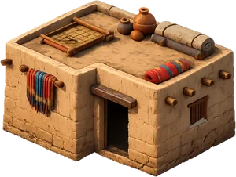
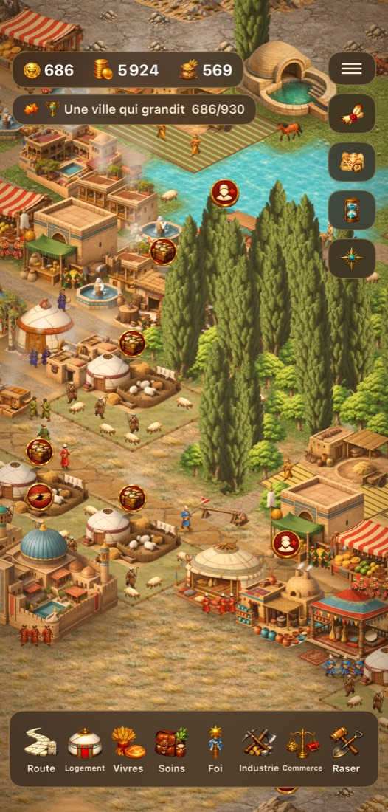
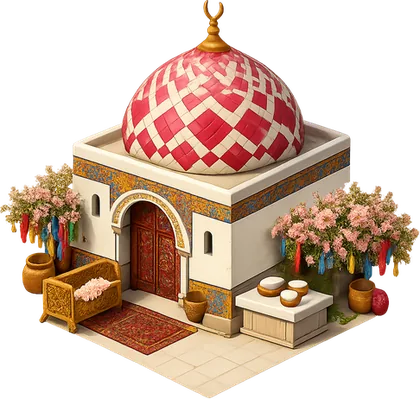
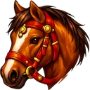
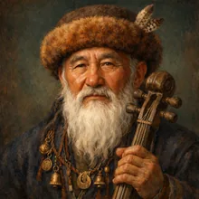
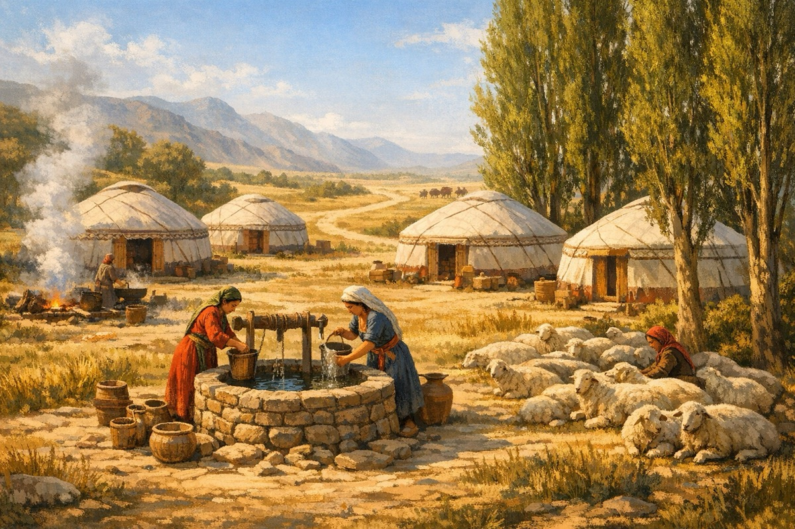
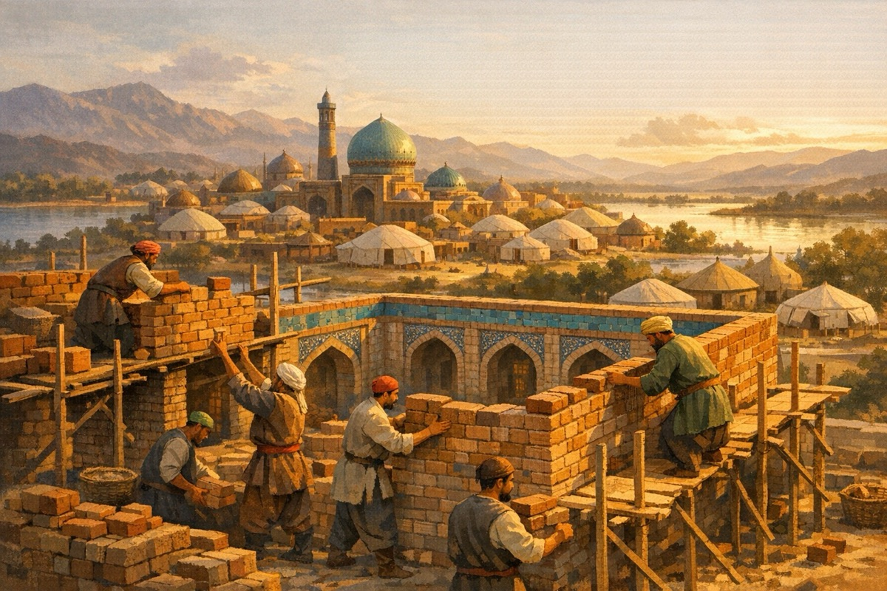

Menez quinze familles à travers la steppe.
Bâtissez-leur un empire sur la route de la soie.
English · Русский · Türkçe · Deutsch · Français · Español
Dans l’esprit des grands jeux de construction de ville, au milieu des yourtes, des caravansérails et des coupoles turquoise d’Asie centrale. Chaque route, chaque puits, chaque autel a sa raison d’être.
Faites paître les moutons, semez le blé, taillez la pierre, extrayez le fer. Transformez la laine en feutre, l’argile en poterie et les cocons en soie.
Cinq grandes cités convoitent chacune d’autres marchandises. Vendez à vos portes, ou envoyez vos propres chameaux vers l’est pour en tirer un meilleur prix.
Nourri, abreuvé, béni et instruit, votre peuple quitte les tentes de feutre pour les demeures aux tours à vent, et le campement devient une capitale.
Une maison ne grandit que si ses besoins sont comblés. Apportez l’eau, puis les vivres, puis la bénédiction d’un chaman, un guérisseur, les contes et la musique, une école, un hammam et une rue calme et verdoyante, et voyez chaque maison s’élever.






Porteurs d’eau, chamans, conteurs et percepteurs arpentent vos rues, et chaque maison devant laquelle ils passent est servie. Les enfants jouent, les femmes rapportent l’eau du puits, et la fumée monte de chaque foyer.
Chaque dieu réclame des autels à la mesure de votre ville. Faites d’un autel un sanctuaire, puis un temple, ou donnez une grande fête en son honneur.

Seigneur de l’immensité bleue au-dessus de la steppe.

Gardienne des foyers, des mères et des enfants.

Maître de tout ce qui gît sous la terre.

Les caravanes des grandes cités arrivent tour à tour, et chacune paie moitié plus cher ce qu’elle convoite. Gardez votre soie pour Samarcande, vendez votre feutre à Boukhara en hiver, et n’inondez jamais le marché.

Vos conseillers veillent sur les greniers, les dieux, le trésor et les brigands à l’horizon, et vous disent sans détour ce dont la ville a besoin.
 Vizir BekzatGrand vizir
Vizir BekzatGrand vizir Émissaire AltynbekLe Grand Khan
Émissaire AltynbekLe Grand Khan Ancienne AigerimLe peuple
Ancienne AigerimLe peuple
Chaman KökbörüLes dieux Capitaine TemirSécurité
Capitaine TemirSécurité YusufCaravanier
YusufCaravanier
Il réclame des chevaux, du feutre ou de l’or pour ses guerres. Satisfaites-le, et d’ancien du clan vous deviendrez son bras droit. Faites-lui défaut trois fois de suite, et son armée se met en selle.
Quand la ville a assez grandi, les plus nobles édifices se débloquent. Encore faut-il les payer en pièces, en pierre et en bois.

Ses maîtres portent le savoir jusqu’aux plus belles maisons.

Les trois dieux vénérés à ciel ouvert.

Des impôts plus abondants et un peuple plus fier. Un seul par ville.

La merveille de votre ville, élevée pierre à pierre, en quatre étapes, au fil des années.
Une campagne qui mène d’un premier campement de yourtes jusqu’à la Horde d’or, à travers de longs hivers, le pays des brigands et l’année de la peste. Ou fondez votre propre khanat dans la Steppe sans fin, où les objectifs ne s’épuisent jamais.




Gratuit pour commencer : le tutoriel et le premier récit de la campagne sont à vous, aussi longtemps que vous le voulez. Un seul achat ouvre toute la route de la Soie, à vous pour toujours. Votre ville est sauvegardée sur votre téléphone, et nul besoin de vous inscrire.